6 Overfitting, Regularization, and Information Criteria
In this chapter we contend with two contrasting kinds of statistical error:
- overfitting, “which leads to poor prediction by learning too much from the data”
- underfitting, “which leads to poor prediction by learning too little from the data” (p. 166, emphasis added)
6.1 The problem with parameters
The \(R^2\) is a popular way to measure how well you can retrodict the data. It traditionally follows the form
\[R^2 = \frac{\text{var(outcome)} - \text{var(residuals)}}{\text{var(outcome)}} = 1 - \frac{\text{var(residuals)}}{\text{var(outcome)}}\]
By \(\text{var()}\), of course, we meant variance (i.e., the var() function in R).
McElreath’s not a fan of the \(R^2\). But it’s important in my field, so instead of a summary at the end of the chapter, we will cover the Bayesian version of \(R^2\) and how to use it in brms.
6.1.1 More parameters always improve fit.
We’ll start off by making the data with brain size and body size for seven species.
library(tidyverse)
(
d <-
tibble(species = c("afarensis", "africanus", "habilis", "boisei", "rudolfensis", "ergaster", "sapiens"),
brain = c(438, 452, 612, 521, 752, 871, 1350),
mass = c(37.0, 35.5, 34.5, 41.5, 55.5, 61.0, 53.5))
)## # A tibble: 7 x 3
## species brain mass
## <chr> <dbl> <dbl>
## 1 afarensis 438 37
## 2 africanus 452 35.5
## 3 habilis 612 34.5
## 4 boisei 521 41.5
## 5 rudolfensis 752 55.5
## 6 ergaster 871 61
## 7 sapiens 1350 53.5Let’s get ready for Figure 6.2. The plots in this chapter will be characterized by theme_classic() + theme(text = element_text(family = "Courier")). Our color palette will come from the rcartocolor package, which provides color schemes designed by ‘CARTO’.
# install.packages("rcartocolor", dependencies = T)
library(rcartocolor)The specific palette we’ll be using is “BurgYl.” In addition to palettes, the rcartocolor package offers a few convenience functions which make it easier to use their palettes. The carto_pal() function will return the HEX numbers associated with a given palette’s colors and the display_carto_pal() function will display the actual colors.
carto_pal(7, "BurgYl")## [1] "#fbe6c5" "#f5ba98" "#ee8a82" "#dc7176" "#c8586c" "#9c3f5d" "#70284a"display_carto_pal(7, "BurgYl")
We’ll be using a diluted version of the third color for the panel background (i.e., theme(panel.background = element_rect(fill = alpha(carto_pal(7, "BurgYl")[3], 1/4)))) and the darker purples for other plot elements. Here’s the plot.
library(ggrepel)
d %>%
ggplot(aes(x = mass, y = brain, label = species)) +
geom_point(color = carto_pal(7, "BurgYl")[5]) +
geom_text_repel(size = 3, color = carto_pal(7, "BurgYl")[7], family = "Courier", seed = 438) +
coord_cartesian(xlim = 30:65) +
labs(x = "body mass (kg)",
y = "brain volume (cc)",
subtitle = "Average brain volume by body\nmass for six hominin species") +
theme_classic() +
theme(text = element_text(family = "Courier"),
panel.background = element_rect(fill = alpha(carto_pal(7, "BurgYl")[3], 1/4)))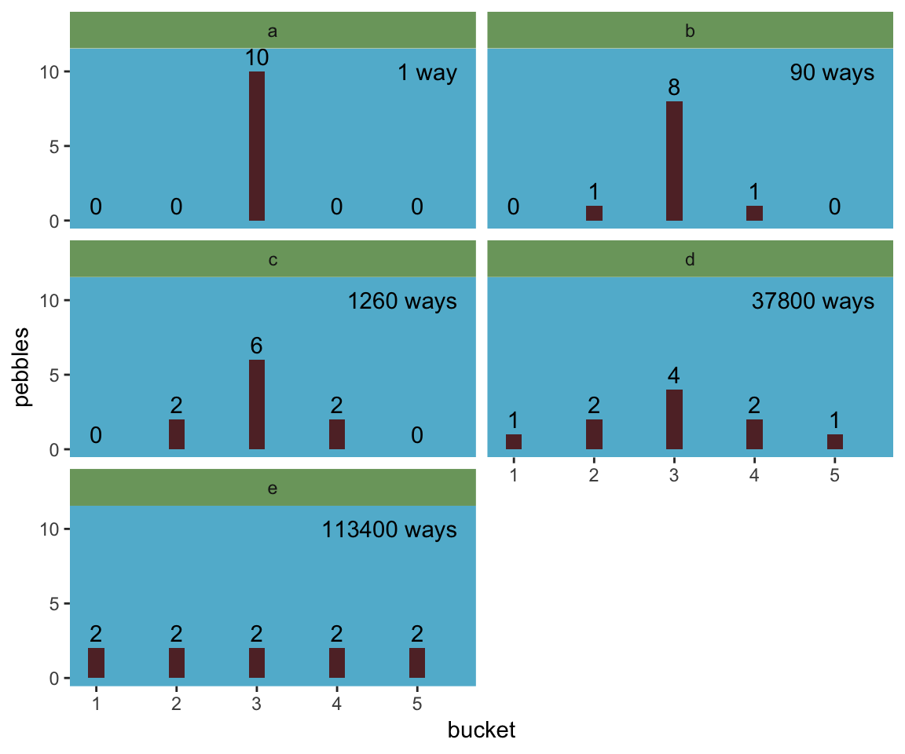
Let’s fit the first six models in bulk. First we’ll make a custom function, fit_lm(), into which we’ll feed the desired names and formulas of our models. We’ll make a tibble initially composed of those names (i.e., model) and formulas (i.e., formula). Via purrr::map2() within mutate(), we’ll then fit the models and save the model objects within the tibble. The broom package provides an array of convenience functions to convert statistical analysis summaries into tidy data objects. We’ll employ broom::tidy() and broom::glance() to extract information from the model fits.
library(broom)
fit_lm <- function(model, formula){
model <- lm(data = d, formula = formula)
}
fits <-
tibble(model = str_c("b6.", 1:6),
formula = c("brain ~ mass",
"brain ~ mass + I(mass^2)",
"brain ~ mass + I(mass^2) + I(mass^3)",
"brain ~ mass + I(mass^2) + I(mass^3) + I(mass^4)",
"brain ~ mass + I(mass^2) + I(mass^3) + I(mass^4) + I(mass^5)",
"brain ~ mass + I(mass^2) + I(mass^3) + I(mass^4) + I(mass^5) + I(mass^6)")) %>%
mutate(fit = map2(model, formula, fit_lm)) %>%
mutate(tidy = map(fit, tidy),
glance = map(fit, glance))
# what did we just do?
print(fits)## # A tibble: 6 x 5
## model formula fit tidy glance
## <chr> <chr> <list> <list> <list>
## 1 b6.1 brain ~ mass <S3: l… <tibble [2 ×… <tibble [1 × …
## 2 b6.2 brain ~ mass + I(mass^2) <S3: l… <tibble [3 ×… <tibble [1 × …
## 3 b6.3 brain ~ mass + I(mass^2) + I(mass^3) <S3: l… <tibble [4 ×… <tibble [1 × …
## 4 b6.4 brain ~ mass + I(mass^2) + I(mass^3) + I(mass^4) <S3: l… <tibble [5 ×… <tibble [1 × …
## 5 b6.5 brain ~ mass + I(mass^2) + I(mass^3) + I(mass^4) + I(m… <S3: l… <tibble [6 ×… <tibble [1 × …
## 6 b6.6 brain ~ mass + I(mass^2) + I(mass^3) + I(mass^4) + I(m… <S3: l… <tibble [7 ×… <tibble [1 × …Our fits object is a nested tibble. To learn more about this bulk approach to fitting models, check out Hadley Wickham’s talk Managing many models with R. As you might learn in the talk, we can extract the \(R^2\) from each model with map_dbl("r.squared"), which we’ll then display in a plot.
fits <-
fits %>%
mutate(r2 = glance %>% map_dbl("r.squared")) %>%
mutate(r2_text = round(r2, digits = 2) %>% as.character() %>% str_replace(., "0.", "."))
fits %>%
ggplot(aes(x = r2, y = formula, label = r2_text)) +
geom_text(color = carto_pal(7, "BurgYl")[7], size = 3.5) +
scale_x_continuous(expression(italic(R)^2), limits = 0:1, breaks = 0:1) +
ylab(NULL) +
theme_classic() +
theme(axis.text.y = element_text(hjust = 0),
axis.ticks.y = element_blank(),
text = element_text(family = "Courier"),
panel.background = element_rect(fill = alpha(carto_pal(7, "BurgYl")[3], 1/4)))
If we wanted to look at the model coefficients, we could unnest(tidy) and wrangle a bit.
fits %>%
unnest(tidy) %>%
select(model, term:estimate) %>%
mutate_if(is.double, round, digits = 1) %>%
complete(term = distinct(., term), model) %>%
spread(key = term, value = estimate) %>%
select(model, `(Intercept)`, mass, everything())## # A tibble: 6 x 8
## model `(Intercept)` mass `I(mass^2)` `I(mass^3)` `I(mass^4)` `I(mass^5)` `I(mass^6)`
## <chr> <dbl> <dbl> <dbl> <dbl> <dbl> <dbl> <dbl>
## 1 b6.1 -228. 20.7 NA NA NA NA NA
## 2 b6.2 -2618. 127. -1.1 NA NA NA NA
## 3 b6.3 21990. -1474. 32.8 -0.2 NA NA NA
## 4 b6.4 322887. -27946. 892. -12.4 0.1 NA NA
## 5 b6.5 -1535342. 180049 -8325. 190. -2.1 0 NA
## 6 b6.6 10849891. -1473228. 82777 -2463. 40.9 -0.4 0For Figure 6.3, we’ll make each plot individually and them glue them together with gridExtra::grid.arrange(). Since they all share a common stucture, we’ll start by specifying a base plot which we’ll save as p.
p <-
d %>%
ggplot(aes(x = mass, y = brain)) +
geom_point(color = carto_pal(7, "BurgYl")[7]) +
scale_x_continuous("body mass (kg)", limits = c(33, 62), expand = c(0, 0)) +
coord_cartesian(ylim = c(300, 1500)) +
ylab("brain volume (cc)") +
theme_classic() +
theme(text = element_text(family = "Courier"),
panel.background = element_rect(fill = alpha(carto_pal(7, "BurgYl")[3], 1/4)))Now for each subplot, we’ll tack the subplot-specific components onto p. The main action is in stat_smooth(). For each subplot, the first three lines in stat_smooth() are identical, with only the bottom formula line differing. Like McElreath did in the text, we also adjust the y-axis range for the last two plots.
# linear
p1 <-
p +
stat_smooth(method = "lm", fullrange = TRUE, level = .89, # Note our rare use of 89% confidence intervals
color = carto_pal(7, "BurgYl")[6], fill = carto_pal(7, "BurgYl")[6],
size = 1/2, alpha = 1/3,
formula = y ~ x) +
ggtitle(NULL, subtitle = expression(paste(italic(R)^2, " = .49")))
# quadratic
p2 <-
p +
stat_smooth(method = "lm", fullrange = TRUE, level = .89,
color = carto_pal(7, "BurgYl")[6], fill = carto_pal(7, "BurgYl")[6],
size = 1/2, alpha = 1/3,
formula = y ~ poly(x, 2)) +
ggtitle(NULL, subtitle = expression(paste(italic(R)^2, " = .54")))
# cubic
p3 <-
p +
stat_smooth(method = "lm", fullrange = TRUE, level = .89,
color = carto_pal(7, "BurgYl")[6], fill = carto_pal(7, "BurgYl")[6],
size = 1/2, alpha = 1/3,
formula = y ~ poly(x, 3)) +
ggtitle(NULL, subtitle = expression(paste(italic(R)^2, " = .68")))
# fourth-order polynomial
p4 <-
p +
stat_smooth(method = "lm", fullrange = TRUE, level = .89,
color = carto_pal(7, "BurgYl")[6], fill = carto_pal(7, "BurgYl")[6],
size = 1/2, alpha = 1/3,
formula = y ~ poly(x, 4)) +
ggtitle(NULL, subtitle = expression(paste(italic(R)^2, " = .81")))
# fifth-order polynomial
p5 <-
p +
stat_smooth(method = "lm", fullrange = TRUE, level = .89,
color = carto_pal(7, "BurgYl")[6], fill = carto_pal(7, "BurgYl")[6],
size = 1/2, alpha = 1/3,
formula = y ~ poly(x, 5)) +
coord_cartesian(ylim = c(150, 1900)) + # We're adjusting the y-axis range for this plot (and the next)
ggtitle(NULL, subtitle = expression(paste(italic(R)^2, " = .99")))
# sixth-order polynomial
p6 <-
p +
geom_hline(yintercept = 0, color = carto_pal(7, "BurgYl")[2], linetype = 2) + # to mark off 0 on the y-axis
stat_smooth(method = "lm", fullrange = TRUE, level = .89,
color = carto_pal(7, "BurgYl")[6], fill = carto_pal(7, "BurgYl")[6],
size = 1/2, alpha = 1/3,
formula = y ~ poly(x, 6)) +
coord_cartesian(ylim = c(-300, 1500)) +
ggtitle(NULL, subtitle = expression(paste(italic(R)^2, " = 1")))Okay, now we’re ready to combine the six subplots and produce our version of Figure 6.3.
library(gridExtra)
grid.arrange(p1, p2, p3, p4, p5, p6, ncol = 2)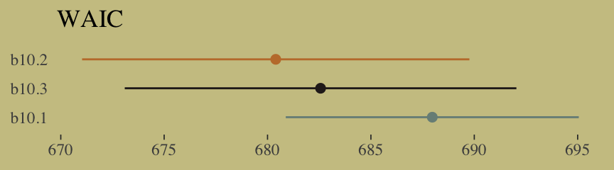
6.1.2 Too few parameters hurts, too.
Fit the intercept only model, b6.7.
b6.7 <- lm(data = d,
brain ~ 1)
summary(b6.7)##
## Call:
## lm(formula = brain ~ 1, data = d)
##
## Residuals:
## Min 1Q Median 3Q Max
## -275.71 -227.21 -101.71 97.79 636.29
##
## Coefficients:
## Estimate Std. Error t value Pr(>|t|)
## (Intercept) 713.7 121.8 5.86 0.00109 **
## ---
## Signif. codes: 0 '***' 0.001 '**' 0.01 '*' 0.05 '.' 0.1 ' ' 1
##
## Residual standard error: 322.2 on 6 degrees of freedomWith the intercept-only model, we didn’t even get an \(R^2\) value in the summary.broom::glance() offers a quick way to get one.
glance(b6.7)## # A tibble: 1 x 11
## r.squared adj.r.squared sigma statistic p.value df logLik AIC BIC deviance df.residual
## <dbl> <dbl> <dbl> <dbl> <dbl> <int> <dbl> <dbl> <dbl> <dbl> <int>
## 1 0 0 322. NA NA 1 -49.8 104. 104. 623061. 6Zero. Our intercept-only b6.7 explained exactly zero variance in brain. All it did was tell us what the unconditional mean and variance (i.e., ‘Residual standard error’) were. I hope that makes sense. They were the only things in the model: \(\text{brain}_i \sim \text{Normal}(\mu = \alpha, \sigma)\). To get the intercept-only model for Figure 6.4, we plug formula = y ~ 1 into the stat_smooth() function.
p +
stat_smooth(method = "lm", fullrange = TRUE, level = .89,
color = carto_pal(7, "BurgYl")[6], fill = carto_pal(7, "BurgYl")[6],
size = 1/2, alpha = 1/3,
formula = y ~ 1) +
ggtitle(NULL, subtitle = expression(paste(italic(R)^2, " = 0")))
6.1.2.1 Overthinking: Dropping rows.
You can filter() by row_number() to drop rows in a tidyverse kind of way. For example, we can drop the second row of d like this.
d %>%
filter(row_number() != 2)## # A tibble: 6 x 3
## species brain mass
## <chr> <dbl> <dbl>
## 1 afarensis 438 37
## 2 habilis 612 34.5
## 3 boisei 521 41.5
## 4 rudolfensis 752 55.5
## 5 ergaster 871 61
## 6 sapiens 1350 53.5We can then extend that logic into a custom function, make_lines(), that will drop a row from d, fit the simple model brain ~ mass, and then use base R predict() to return the model-implied trajectory over new data values.
# because these lines are straight, we only need new data over two points of `mass`
nd <- tibble(mass = c(30, 70))
make_lines <- function(row){
my_fit <-
d %>%
filter(row_number() != row) %>%
lm(formula = brain ~ mass)
predict(my_fit, nd) %>%
as_tibble() %>%
rename(brain = value) %>%
bind_cols(nd)
}Here we’ll make a tibble, lines, which will specify rows 1 through 7 in the row column. We’ll then feed those row numbers into our custom make_lines() function, which will return the predicted values and their corresponding mass values, per model.
(
lines <-
tibble(row = 1:7) %>%
mutate(p = map(row, make_lines)) %>%
unnest(p)
)## # A tibble: 14 x 3
## row brain mass
## <int> <dbl> <dbl>
## 1 1 436. 30
## 2 1 1201. 70
## 3 2 421. 30
## 4 2 1205. 70
## 5 3 323. 30
## 6 3 1264. 70
## 7 4 423. 30
## 8 4 1221. 70
## 9 5 376. 30
## 10 5 1335. 70
## 11 6 332. 30
## 12 6 1433. 70
## 13 7 412. 30
## 14 7 964. 70Now we’re ready to plot the left panel of Figure 6.5.
p +
scale_x_continuous(expand = c(0, 0)) +
geom_line(data = lines,
aes(x = mass, y = brain, group = row),
color = carto_pal(7, "BurgYl")[6], alpha = 1/2, size = 1/2)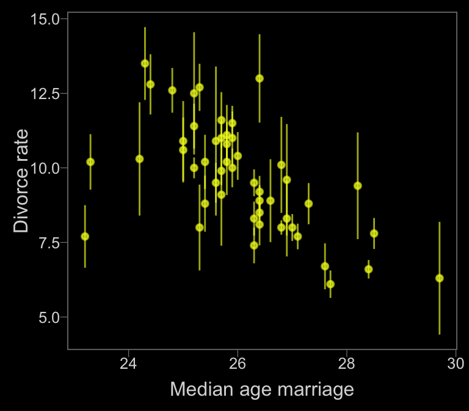
To make the right panel for Figure 6.5, we’ll need to increase the number of mass points in our nd data and redefine the make_lines() function to fit the sixth-order-polynomial model.
# because these lines will be very curvy, we'll need new data over many points of `mass`
nd <- tibble(mass = seq(from = 30, to = 65, length.out = 200))
# redifine the function
make_lines <- function(row){
my_fit <-
d %>%
filter(row_number() != row) %>%
lm(formula = brain ~ mass + I(mass^2) + I(mass^3) + I(mass^4) + I(mass^5) + I(mass^6))
predict(my_fit, nd) %>%
as_tibble() %>%
rename(brain = value) %>%
bind_cols(nd)
}
# make our new tibble
lines <-
tibble(row = 1:7) %>%
mutate(p = map(row, make_lines)) %>%
unnest(p)
# plot!
p +
geom_line(data = lines,
aes(group = row),
color = carto_pal(7, "BurgYl")[6], alpha = 1/2, size = 1/2) +
coord_cartesian(ylim = -300:2000)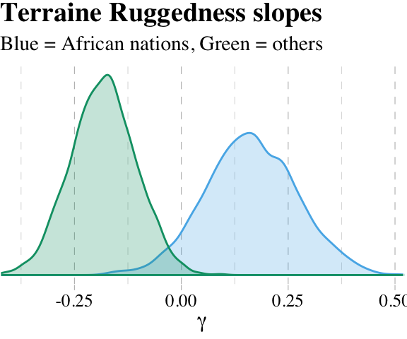
6.2 Information theory and model performance
Whether you end up using regularization or information criteria or both, the first thing you must do is pick a criterion of model performance. What do you want the model to do well at? We’ll call this criterion the target, and in this section you’ll see how information theory provides a common and useful target, the out-of-sample deviance. (p. 174, emphasis in the original)
6.2.1 Firing the weatherperson.
If you let rain = 1 and sun = 0, here’s a way to make a plot of the first table of page 175, the weatherperson’s predictions.
weatherperson <-
tibble(day = 1:10,
prediction = rep(c(1, 0.6), times = c(3, 7)),
observed = rep(c(1, 0), times = c(3, 7)))
weatherperson %>%
gather(key, value, -day) %>%
ggplot(aes(x = day, y = key, fill = value)) +
geom_tile(color = "white") +
geom_text(aes(label = value, color = value == 0)) +
scale_x_continuous(breaks = 1:10, expand = c(0, 0)) +
scale_y_discrete(NULL, expand = c(0, 0)) +
scale_fill_viridis_c(direction = -1) +
scale_color_manual(values = c("white", "black")) +
theme(legend.position = "none",
axis.ticks.y = element_blank(),
text = element_text(family = "Courier"))
Here’s how the newcomer fared:
newcomer <-
tibble(day = 1:10,
prediction = 0,
observed = rep(c(1, 0), times = c(3, 7)))
newcomer %>%
gather(key, value, -day) %>%
ggplot(aes(x = day, y = key, fill = value)) +
geom_tile(color = "white") +
geom_text(aes(label = value, color = value == 0)) +
scale_x_continuous(breaks = 1:10, expand = c(0, 0)) +
scale_y_discrete(NULL, expand = c(0, 0)) +
scale_fill_viridis_c(direction = -1) +
scale_color_manual(values = c("white", "black")) +
theme(legend.position = "none",
axis.ticks.y = element_blank(),
text = element_text(family = "Courier"))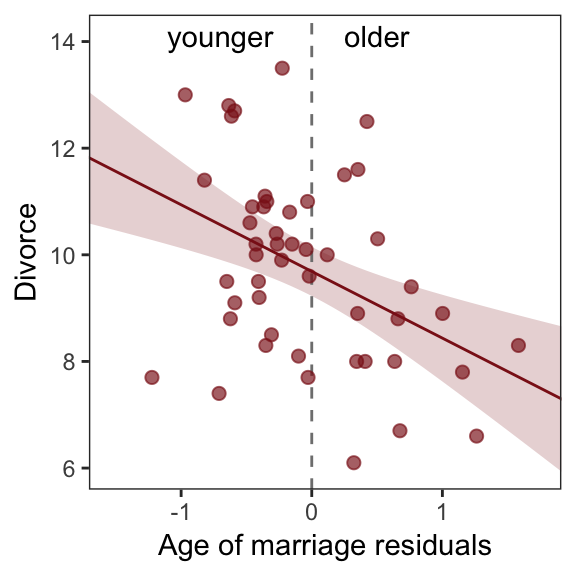
If we do the math entailed in the tibbles, we’ll see why the newcomer could boast “I’m the best person for the job” (p. 175).
weatherperson %>%
bind_rows(newcomer) %>%
mutate(person = rep(c("weatherperson", "newcomer"), each = n()/2),
hit = ifelse(prediction == observed, 1, 1 - prediction - observed)) %>%
group_by(person) %>%
summarise(hit_rate = mean(hit))## # A tibble: 2 x 2
## person hit_rate
## <chr> <dbl>
## 1 newcomer 0.7
## 2 weatherperson 0.586.2.1.1 Costs and benefits.
Our new points variable doesn’t fit into the nice color-based geom_tile() plots from above. But we can still do the math.
weatherperson %>%
bind_rows(newcomer) %>%
mutate(person = rep(c("weatherperson", "newcomer"), each = n()/2),
points = ifelse(observed == 1 & prediction != 1, -5,
ifelse(observed == 1 & prediction == 1, -1,
-1 * prediction))) %>%
group_by(person) %>%
summarise(happiness = sum(points))## # A tibble: 2 x 2
## person happiness
## <chr> <dbl>
## 1 newcomer -15
## 2 weatherperson -7.26.2.1.2 Measuring accuracy.
weatherperson %>%
bind_rows(newcomer) %>%
mutate(person = rep(c("weatherperson", "newcomer"), each = n() / 2),
hit = ifelse(prediction == observed, 1, 1 - prediction - observed)) %>%
group_by(person, hit) %>%
count() %>%
ungroup() %>%
mutate(power = hit ^ n,
term = rep(letters[1:2], times = 2)) %>%
select(person, term, power) %>%
spread(key = term, value = power) %>%
mutate(probability_correct_sequence = a * b)## # A tibble: 2 x 4
## person a b probability_correct_sequence
## <chr> <dbl> <dbl> <dbl>
## 1 newcomer 0 1 0
## 2 weatherperson 0.00164 1 0.001646.2.2 Information and uncertainty.
The formula for information entropy is:
\[H(p) = - \text{E log} (p_i) = - \sum_{i = 1}^n p_i \text{log} (p_i)\]
McElreath put it in words as “the uncertainty contained in a probability distribution is the average log-probability of the event” (p. 178). We’ll compute the information entropy for weather at the first unnamed location, which we’ll call McElreath's house, and Abu Dhabi at once.
tibble(place = c("McElreath's house", "Abu Dhabi"),
p_rain = c(.3, .01)) %>%
mutate(p_shine = 1 - p_rain) %>%
group_by(place) %>%
mutate(H_p = (p_rain * log(p_rain) + p_shine * log(p_shine)) %>% mean() * -1)## # A tibble: 2 x 4
## # Groups: place [2]
## place p_rain p_shine H_p
## <chr> <dbl> <dbl> <dbl>
## 1 McElreath's house 0.3 0.7 0.611
## 2 Abu Dhabi 0.01 0.99 0.0560The uncertainty is less in Abu Dhabi because it rarely rains, there. If you have sun, rain and snow, the entropy for weather is:
p <- c(.7, .15, .15)
-sum(p * log(p))## [1] 0.81880856.2.3 From entropy to accuracy.
The formula for the Kullback-Leibler divergence (i.e., K-L divergence) is
\[D_{\text{KL}} (p, q) = \sum_i p_i \big ( \text{log} (p_i) - \text{log} (q_i) \big ) = \sum_i p_i \text{log} \Bigg ( \frac{p_i}{q_i} \Bigg )\]
which, in plainer language, is what McElreath described as “the average difference in log probability between the target (p) and model (q)” (p. 179).
In McElreath’s example
- \(p_1 = .3\)
- \(p_2 = .7\)
- \(q_1 = .25\)
- \(q_2 = .75\)
With those values, we can compute \(D_{\text{KL}} (p, q)\) within a tibble like so:
tibble(p_1 = .3,
p_2 = .7,
q_1 = .25,
q_2 = .75) %>%
mutate(d_kl = (p_1 * log(p_1 / q_1)) + (p_2 * log(p_2 / q_2)))## # A tibble: 1 x 5
## p_1 p_2 q_1 q_2 d_kl
## <dbl> <dbl> <dbl> <dbl> <dbl>
## 1 0.3 0.7 0.25 0.75 0.00640Our systems in this section are binary (e.g., \(q = \lbrace q_i, q_2 \rbrace\)). Thus if you know \(q_1 = .3\) you know of a necessity \(q_2 = 1 - q_1\). Therefore we can code the tibble for the next example of when \(p = q\) like this:
tibble(p_1 = .3) %>%
mutate(p_2 = 1 - p_1,
q_1 = p_1) %>%
mutate(q_2 = 1 - q_1) %>%
mutate(d_kl = (p_1 * log(p_1 / q_1)) + (p_2 * log(p_2 / q_2)))## # A tibble: 1 x 5
## p_1 p_2 q_1 q_2 d_kl
## <dbl> <dbl> <dbl> <dbl> <dbl>
## 1 0.3 0.7 0.3 0.7 0Building off of that, you can make the data required for Figure 6.6 like this.
t <-
tibble(p_1 = .3,
p_2 = .7,
q_1 = seq(from = .01, to = .99, by = .01)) %>%
mutate(q_2 = 1 - q_1) %>%
mutate(d_kl = (p_1 * log(p_1 / q_1)) + (p_2 * log(p_2 / q_2)))
head(t)## # A tibble: 6 x 5
## p_1 p_2 q_1 q_2 d_kl
## <dbl> <dbl> <dbl> <dbl> <dbl>
## 1 0.3 0.7 0.01 0.99 0.778
## 2 0.3 0.7 0.02 0.98 0.577
## 3 0.3 0.7 0.03 0.97 0.462
## 4 0.3 0.7 0.04 0.96 0.383
## 5 0.3 0.7 0.05 0.95 0.324
## 6 0.3 0.7 0.06 0.94 0.276Now we have the data, plotting Figure 6.6 is a just geom_line() with stylistic flourishes.
t %>%
ggplot(aes(x = q_1, y = d_kl)) +
geom_vline(xintercept = .3, color = carto_pal(7, "BurgYl")[5], linetype = 2) +
geom_line(color = carto_pal(7, "BurgYl")[7], size = 1.5) +
annotate(geom = "text", x = .4, y = 1.5, label = "q = p",
color = carto_pal(7, "BurgYl")[5], family = "Courier", size = 3.5) +
labs(x = "q[1]",
y = "Divergence of q from p") +
theme_classic() +
theme(text = element_text(family = "Courier"),
panel.background = element_rect(fill = alpha(carto_pal(7, "BurgYl")[3], 1/4)))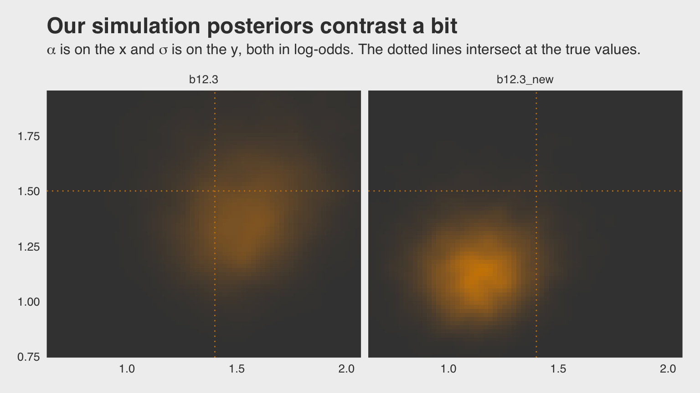
6.2.3.1 Rethinking: Divergence depends upon direction.
Here we see \(H(p, q) \neq H(q, p)\). That is, direction matters.
tibble(direction = c("Earth to Mars", "Mars to Earth"),
p_1 = c(.01, .7),
q_1 = c(.7, .01)) %>%
mutate(p_2 = 1 - p_1,
q_2 = 1 - q_1) %>%
mutate(d_kl = (p_1 * log(p_1 / q_1)) + (p_2 * log(p_2 / q_2)))## # A tibble: 2 x 6
## direction p_1 q_1 p_2 q_2 d_kl
## <chr> <dbl> <dbl> <dbl> <dbl> <dbl>
## 1 Earth to Mars 0.01 0.7 0.99 0.3 1.14
## 2 Mars to Earth 0.7 0.01 0.3 0.99 2.62The \(D_{\text{KL}}\) was double when applying Martian estimates to Terran estimates.
6.2.4 From divergence to deviance.
The point of all the preceding material about information theory and divergence is to establish both:
How to measure the distance of a model from our target. Information theory gives us the distance measure we need, the K-L divergence.
How to estimate the divergence. Having identified the right measure of distance, we now need a way to estimate it in real statistical modeling tasks. (p. 181)
Now we’ll start working on item #2.
We define deviance as:
\[D(q) = -2 \sum_i \text{log}(p_i)\]
In the formula, \(i\) indexes each case and \(q_i\) is the likelihood for each case. Here’s the deviance from model b6.1.
lm(data = d,
brain ~ mass) %>%
logLik() * -2## 'log Lik.' 94.92499 (df=3)6.2.4.1 Overthinking: Computing deviance.
To follow along with the text, we’ll need to standardize mass before we compute deviance.
d <-
d %>%
mutate(mass_s = (mass - mean(mass)) / sd(mass))Open brms.
library(brms)Now we’ll specify the initial values and fit the model.
# Here we specify our starting values
inits <- list(Intercept = mean(d$brain),
mass_s = 0,
sigma = sd(d$brain))
inits_list <- list(inits, inits, inits, inits)
# The model
b6.8 <-
brm(data = d, family = gaussian,
brain ~ 1 + mass_s,
prior = c(prior(normal(0, 1000), class = Intercept),
prior(normal(0, 1000), class = b),
prior(cauchy(0, 10), class = sigma)),
iter = 2000, warmup = 1000, chains = 4, cores = 4,
inits = inits_list, # here we insert our start values
seed = 6)print(b6.8)## Family: gaussian
## Links: mu = identity; sigma = identity
## Formula: brain ~ 1 + mass_s
## Data: d (Number of observations: 7)
## Samples: 4 chains, each with iter = 2000; warmup = 1000; thin = 1;
## total post-warmup samples = 4000
##
## Population-Level Effects:
## Estimate Est.Error l-95% CI u-95% CI Eff.Sample Rhat
## Intercept 709.49 105.07 502.06 922.93 2804 1.00
## mass_s 220.64 109.71 -0.21 439.82 2893 1.00
##
## Family Specific Parameters:
## Estimate Est.Error l-95% CI u-95% CI Eff.Sample Rhat
## sigma 263.87 94.86 148.87 495.15 1746 1.00
##
## Samples were drawn using sampling(NUTS). For each parameter, Eff.Sample
## is a crude measure of effective sample size, and Rhat is the potential
## scale reduction factor on split chains (at convergence, Rhat = 1).Details about inits: You don’t have to specify your inits lists outside of the brm() function the way we did, here. This is just how I currently prefer. When you specify start values for the parameters in your Stan models, you need to do so with a list of lists. You need as many lists as HMC chains–four in this example. And then you put your–in this case–four lists inside a list. Lists within lists. Also, we were lazy and specified the same start values across all our chains. You can mix them up across chains if you want.
Anyway, the brms function log_lik() returns a matrix. Each occasion gets a column and each HMC chain iteration gets a row. To make it easier to understand the output, we’ll name the columns by species using the .name_repair argument within the as_tibble() function.
ll <-
b6.8 %>%
log_lik() %>%
as_tibble(.name_repair = ~ d$species)
ll %>%
glimpse()## Observations: 4,000
## Variables: 7
## $ afarensis <dbl> -6.533346, -7.364236, -6.354499, -6.591231, -6.198465, -6.605723, -6.428844, …
## $ africanus <dbl> -6.529212, -7.318601, -6.380887, -6.501201, -6.204924, -6.630343, -6.489288, …
## $ habilis <dbl> -6.684437, -7.078882, -6.924421, -6.465999, -6.729976, -6.965095, -7.075861, …
## $ boisei <dbl> -6.543591, -7.261918, -6.397131, -6.604107, -6.196515, -6.603495, -6.416063, …
## $ rudolfensis <dbl> -6.947669, -7.070620, -7.095121, -6.729509, -6.196600, -6.611958, -6.591881, …
## $ ergaster <dbl> -7.387421, -7.009474, -7.415504, -6.694015, -6.203039, -6.609322, -6.669332, …
## $ sapiens <dbl> -11.396992, -7.490887, -7.742427, -8.074139, -11.303673, -8.671387, -8.576077…Deviance is the sum of the occasion-level LLs multiplied by -2. Why by -2? “The -2 in front doesn’t do anything important. It’s there for historical reasons” (p. 182). If you follow footnote 93 at the end of that sentence in the text, you’ll learn “under somewhat general conditions, for many common model types, a difference between two deviances has a chi-squared distribution. The factor of 2 is there to scale it that way” (p. 451).
ll <-
ll %>%
mutate(sums = rowSums(.),
deviance = -2 * sums)Because we used HMC, deviance is a distribution rather than a single number.
library(tidybayes)
ll %>%
ggplot(aes(x = deviance, y = 0)) +
geom_halfeyeh(fill = carto_pal(7, "BurgYl")[5], color = carto_pal(7, "BurgYl")[7],
point_interval = median_qi, .width = .95) +
scale_x_continuous(breaks = quantile(ll$deviance, c(.025, .5, .975)),
labels = quantile(ll$deviance, c(.025, .5, .975)) %>% round(1)) +
scale_y_continuous(NULL, breaks = NULL) +
labs(title = "The deviance distribution") +
theme_classic() +
theme(text = element_text(family = "Courier"),
panel.background = element_rect(fill = alpha(carto_pal(7, "BurgYl")[3], 1/4)))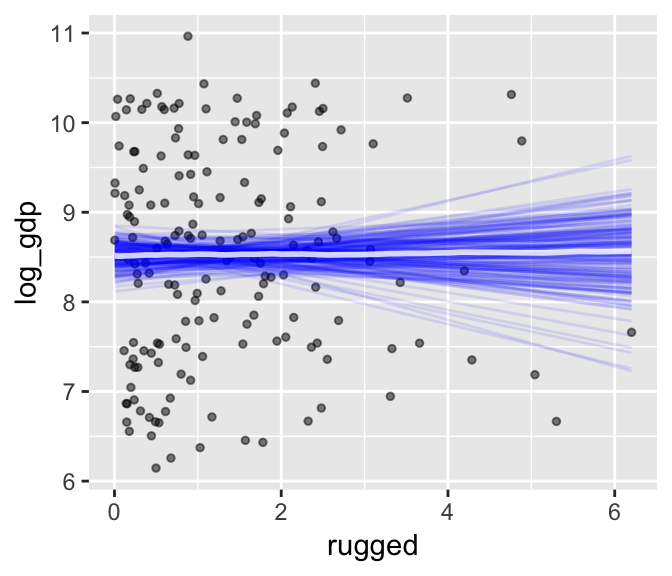
But notice our deviance distribution was centered right around the sole value McElreath reported in the text.
6.2.5 From deviance to out-of-sample.
Deviance is a principled way to measure distance from the target. But deviance as computed in the previous section has the same flaw as \(R^2\): It always improves as the model gets more complex, at least for the types of models we have considered so far. Just like \(R^2\), deviance in-sample is a measure of retrodictive accuracy, not predictive accuracy.
In the next subsection, we’ll see this in a simulation.
6.2.5.1 Overthinking: Simulated training and testing.
I find the rethinking::sim.train.test() function opaque. If you’re curious, you can find McElreath’s code here. Let’s simulate and see what happens.
library(rethinking)
n <- 20
kseq <- 1:5
# I've reduced this number by one order of magnitude to reduce computation time
n_sim <- 1e3
n_cores <- 4
# here's our dev object based on `N <- 20`
dev_20 <-
sapply(kseq, function(k) {
print(k);
r <- mcreplicate(n_sim, sim.train.test(N = n, k = k),
mc.cores = n_cores);
c(mean(r[1, ]), mean(r[2, ]), sd(r[1, ]), sd(r[2, ]))
})
# here's our dev object based on N <- 100
n <- 100
dev_100 <-
sapply(kseq, function(k) {
print(k);
r <- mcreplicate(n_sim, sim.train.test(N = n, k = k),
mc.cores = n_cores);
c(mean(r[1, ]), mean(r[2, ]), sd(r[1, ]), sd(r[2, ]))
})If you didn’t quite catch it, the simulation yields dev_20 and dev_100. We’ll want to convert them to tibbles, bind them together, and wrangle extensively before we’re ready to plot.
dev_tibble <-
dev_20 %>%
as_tibble() %>%
bind_rows(
dev_100 %>%
as_tibble()
) %>%
mutate(n = rep(c("n = 20", "n = 100"), each = 4),
statistic = rep(c("mean", "sd"), each = 2) %>% rep(., times = 2),
sample = rep(c("in", "out"), times = 2) %>% rep(., times = 2)) %>%
gather(n_par, value, -n, -statistic, -sample) %>%
spread(key = statistic, value = value) %>%
mutate(n = factor(n, levels = c("n = 20", "n = 100")),
n_par = str_remove(n_par, "V") %>% as.double()) %>%
mutate(n_par = ifelse(sample == "in", n_par - .075, n_par + .075))## Warning: `as_tibble.matrix()` requires a matrix with column names or a `.name_repair` argument. Using compatibility `.name_repair`.
## This warning is displayed once per session.head(dev_tibble)## # A tibble: 6 x 5
## n sample n_par mean sd
## <fct> <chr> <dbl> <dbl> <dbl>
## 1 n = 100 in 0.925 283. 14.1
## 2 n = 100 in 1.92 279. 13.9
## 3 n = 100 in 2.92 263. 11.1
## 4 n = 100 in 3.92 263. 11.2
## 5 n = 100 in 4.92 262. 11.2
## 6 n = 100 out 1.08 285. 14.4Now we’re ready to make Figure 6.7.
# this intermediary tibble will make `geom_text()` easier
dev_text <-
dev_tibble %>%
filter(n_par > 1.5,
n_par < 2.5) %>%
mutate(n_par = ifelse(sample == "in", n_par - .2, n_par + .28))
# the plot
dev_tibble %>%
ggplot(aes(x = n_par, y = mean,
ymin = mean - sd, ymax = mean + sd,
group = sample,
color = sample,
fill = sample)) +
geom_pointrange(shape = 21) +
geom_text(data = dev_text,
aes(label = sample)) +
scale_color_manual(values = c(carto_pal(7, "BurgYl")[7], carto_pal(7, "BurgYl")[5])) +
scale_fill_manual(values = c(carto_pal(7, "BurgYl")[5], carto_pal(7, "BurgYl")[7])) +
labs(x = "number of parameters",
y = "deviance") +
theme_classic() +
theme(text = element_text(family = "Courier"),
legend.position = "none",
strip.background = element_rect(fill = alpha(carto_pal(7, "BurgYl")[1], 1/4), color = "white"),
panel.background = element_rect(fill = alpha(carto_pal(7, "BurgYl")[3], 1/4))) +
facet_wrap(~n, scale = "free_y")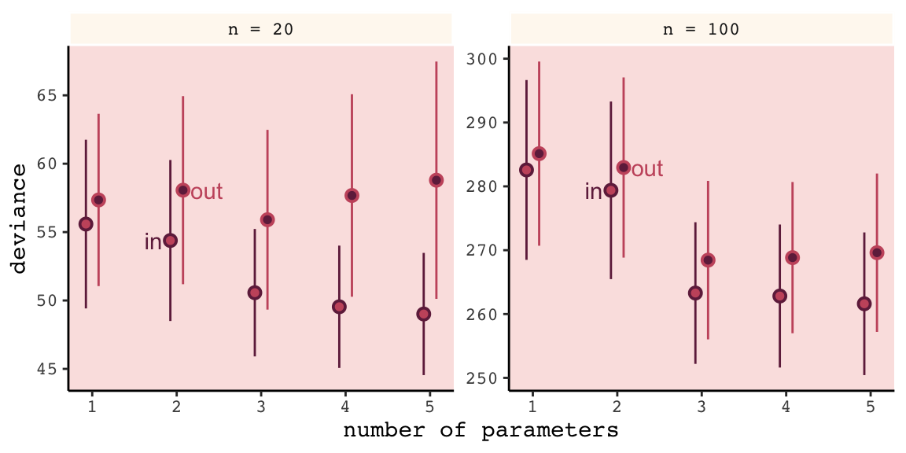
Even with a substantially smaller \(N\), our simulation results matched up well with those in the text.
6.3 Regularization
The root of overfitting is a model’s tendency to get overexcited by the training sample… One way to prevent a model from getting too excited by the training sample is to give it a skeptical prior. By “skeptical,” I mean a prior that slows the rate of learning from the sample. (p. 186)
In case you were curious, here’s how you might do Figure 6.8 with ggplot2. All the action is in the geom_ribbon() portions.
tibble(x = seq(from = - 3.5,
to = 3.5,
by = .01)) %>%
ggplot(aes(x = x, ymin = 0)) +
geom_ribbon(aes(ymax = dnorm(x, mean = 0, sd = 0.2)),
fill = carto_pal(7, "BurgYl")[7], alpha = 1/2) +
geom_ribbon(aes(ymax = dnorm(x, mean = 0, sd = 0.5)),
fill = carto_pal(7, "BurgYl")[6], alpha = 1/2) +
geom_ribbon(aes(ymax = dnorm(x, mean = 0, sd = 1)),
fill = carto_pal(7, "BurgYl")[5], alpha = 1/2) +
scale_y_continuous(NULL, breaks = NULL) +
xlab("parameter value") +
coord_cartesian(xlim = c(-3, 3)) +
theme_classic() +
theme(text = element_text(family = "Courier"),
panel.background = element_rect(fill = alpha(carto_pal(7, "BurgYl")[3], 1/4)))
In our version of the plot, darker purple = more regularizing.
But to prepare for Figure 6.9, let’s simulate. This time we’ll wrap the basic simulation code we used before into a function we’ll call make_sim(). Our make_sim() function has two parameters, N and b_sigma, both of which come from McElreath’s simulation code. So you’ll note that instead of hard coding the values for N and b_sigma within the simulation, we’re leaving them adjustable (i.e., sim.train.test(N = n, k = k, b_sigma = b_sigma)). Also notice that instead of saving the simulation results as objects, like before, we’re just converting them to tibbles with the as_tibble() function at the bottom. Our goal is to use make_sim() within a purrr::map2() statement. The result will be a nested tibble into which we’ve saved the results of 6 simulations based off of two sample sizes (i.e., n = c(20, 100)) and three values of \(\sigma\) for our Gaussian \(\beta\) prior (i.e., b_sigma = c(1, .5, .2)).
library(rethinking)
# I've reduced this number by one order of magnitude to reduce computation time
n_sim <- 1e3
make_sim <- function(n, b_sigma){
sapply(kseq, function(k) {
print(k);
r <- mcreplicate(n_sim, sim.train.test(N = n, k = k, b_sigma = b_sigma), # this is an augmented line of code
mc.cores = n_cores);
c(mean(r[1, ]), mean(r[2, ]), sd(r[1, ]), sd(r[2, ])) }) %>%
# this is a new line of code
as_tibble()
}
s <-
tibble(n = rep(c(20, 100), each = 3),
b_sigma = rep(c(1, .5, .2), times = 2)) %>%
mutate(sim = map2(n, b_sigma, make_sim)) %>%
unnest()We’ll follow the same principles for wrangling these data as we did those from the previous simulation, dev_tibble. And after wrangling, we’ll feed the data directly into the code for our version of Figure 6.9.
# wrangle the simulation data
s %>%
mutate(statistic = rep(c("mean", "sd"), each = 2) %>% rep(., times = 3 * 2),
sample = rep(c("in", "out"), times = 2) %>% rep(., times = 3 * 2)) %>%
gather(n_par, value, -n, -b_sigma, -statistic, -sample) %>%
spread(key = statistic, value = value) %>%
mutate(n = str_c("n = ", n) %>% factor(., levels = c("n = 20", "n = 100")),
n_par = str_remove(n_par, "V") %>% as.double()) %>%
# now plot
ggplot(aes(x = n_par, y = mean,
group = interaction(sample, b_sigma))) +
geom_line(aes(color = sample, size = b_sigma %>% as.character())) +
# this function contains the data from the previous simulation
geom_point(data = dev_tibble,
aes(group = sample, fill = sample),
color = "black", shape = 21, size = 2.5, stroke = .1) +
scale_fill_manual(values = c(carto_pal(7, "BurgYl")[7], carto_pal(7, "BurgYl")[5])) +
scale_color_manual(values = c(carto_pal(7, "BurgYl")[7], carto_pal(7, "BurgYl")[5])) +
scale_size_manual(values = c(1, .5, .2)) +
labs(x = "number of parameters",
y = "deviance") +
theme_classic() +
theme(text = element_text(family = "Courier"),
legend.position = "none",
strip.background = element_rect(fill = alpha(carto_pal(7, "BurgYl")[1], 1/4), color = "white"),
panel.background = element_rect(fill = alpha(carto_pal(7, "BurgYl")[3], 1/4))) +
facet_wrap(~n, scale = "free_y")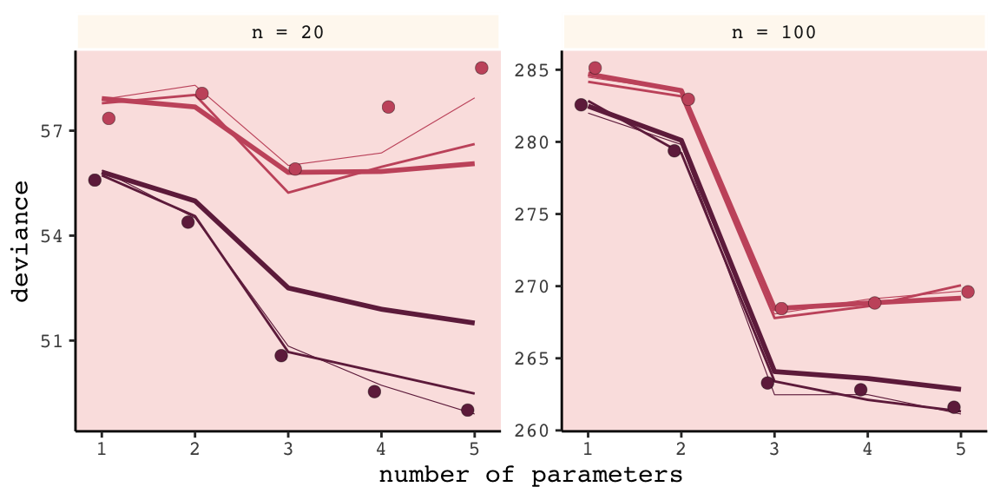
Our results don’t perfectly align with those in the text. I suspect his is because we used 1e3 iterations, rather than the 1e4 of the text. If you’d like to wait all night long for the simulation to yield more stable results, be my guest.
Regularizing priors are great, because they reduce overfitting. But if they are too skeptical, they prevent the model from learning from the data. So to use them effectively, you need some way to tune them. Tuning them isn’t always easy. (p. 187)
For more on this how to choose your priors, consider Gelman, Simpson, and Betancourt’s The prior can generally only be understood in the context of the likelihood, a paper that will probably make more sense after Chapter 8. And if you’re feeling feisty, also check out Simpson’s related blog post (It’s never a) Total Eclipse of the Prior.
6.3.0.1 Rethinking: Ridge regression.
Within the brms framework, you can do something like this with the horseshoe prior via the horseshoe() function. You can learn all about it from the horseshoe section of the brms reference manual (version 2.8.0). Here’s an extract from the section:
The horseshoe prior is a special shrinkage prior initially proposed by Carvalho et al. (2009). It is symmetric around zero with fat tails and an infinitely large spike at zero. This makes it ideal for sparse models that have many regression coefficients, although only a minority of them is non- zero. The horseshoe prior can be applied on all population-level effects at once (excluding the intercept) by using
set_prior("horseshoe(1)"). (p. 70)
And to dive even deeper into the horseshoe prior, check out Michael Betancourt’s tutorial, Bayes Sparse Regression.
6.4 Information criteria
The data from our initial simulation isn’t formatted well to plot Figure 6.10. We’ll have to wrangle a little.
(
dev_tibble <-
dev_tibble %>%
select(-sd) %>%
mutate(n_par = ifelse(sample == "in", n_par + .075, n_par - .075)) %>%
spread(key = sample, value = mean) %>%
mutate(height = (out - `in`) %>% round(digits = 1) %>% as.character(),
dash = `in` + 2 * n_par)
)## # A tibble: 10 x 6
## n n_par `in` out height dash
## <fct> <dbl> <dbl> <dbl> <chr> <dbl>
## 1 n = 20 1 55.6 57.4 1.8 57.6
## 2 n = 20 2 54.4 58.1 3.7 58.4
## 3 n = 20 3 50.6 55.9 5.3 56.6
## 4 n = 20 4 49.5 57.7 8.1 57.5
## 5 n = 20 5 49.0 58.8 9.8 59.0
## 6 n = 100 1 283. 285. 2.6 285.
## 7 n = 100 2 279. 283. 3.6 283.
## 8 n = 100 3 263. 268. 5.2 269.
## 9 n = 100 4 263. 269. 6 271.
## 10 n = 100 5 262. 270. 8 272.Now we’re ready to plot.
dev_tibble %>%
ggplot(aes(x = n_par)) +
geom_line(aes(y = dash),
linetype = 2, color = carto_pal(7, "BurgYl")[5]) +
geom_point(aes(y = `in`),
color = carto_pal(7, "BurgYl")[7], size = 2) +
geom_point(aes(y = out),
color = carto_pal(7, "BurgYl")[5], size = 2) +
geom_errorbar(aes(x = n_par + .15,
ymin = `in`, ymax = out),
width = .1, color = carto_pal(7, "BurgYl")[6]) +
geom_text(aes(x = n_par + .4,
y = (out + `in`) / 2,
label = height),
family = "Courier", size = 3, color = carto_pal(7, "BurgYl")[6]) +
labs(x = "number of parameters",
y = "deviance") +
theme_classic() +
theme(text = element_text(family = "Courier"),
strip.background = element_rect(fill = alpha(carto_pal(7, "BurgYl")[1], 1/4), color = "white"),
panel.background = element_rect(fill = alpha(carto_pal(7, "BurgYl")[3], 1/4))) +
facet_wrap(~n, scale = "free_y")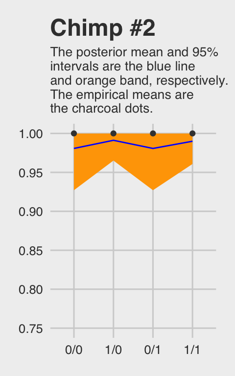
Again, our numbers aren’t the exact same as McElreath’s because a) this is a simulation and b) our number of simulations was an order of magnitude smaller than his. But the overall pattern is the same. More to the point, the distances between the in- and out-of-sample points
are nearly the same, for each model, at both \(N = 20\) (left) and \(N = 100\) (right). Each distance is nearly twice the number of parameters, as labeled on the horizontal axis. The dashed lines show exactly the [dark purple] points plus twice the number of parameters, tracing closely along the average out-of-sample deviance for each model.
This is the phenomenon behind information criteria. (p. 189)
In the text, McElreach focused on the DIC and WAIC. As you’ll see, the LOO has increased in popularity since he published the text. Going forward, we’ll juggle the WAIC and the LOO in this project. But we will respect the text and work in a little DIC talk.
6.4.1 DIC.
The DIC has been widely used for some time, now. For a great talk on the DIC, check out the authoritative David Spiegelhalter’s Retrospective read paper: Bayesian measure of model complexity and fit. If we define \(D\) as the deviance’s posterior distribution, \(\bar{D}\) as its mean and \(\hat{D}\) as the deviance when computed at the posterior mean, then we define the DIC as
\[\text{DIC} = \bar{D} + (\bar{D} + \hat{D}) + \bar{D} + p_D\]
And \(p_D\) is the number of effective parameters in the model, which is also sometimes referred to as the penalty term. As you’ll see, you can get the \(p_D\) for brms::brm() models. However, I’m not aware of a way to that brms or the loo package–to be introduced shortly–offer convenience functions that yield the DIC.
6.4.2 WAIC.
It’s okay that the brms and loo packages don’t yield the DIC because
even better than the DIC is the Widely Applicable Information Criterion (WAIC)…
Define \(\text{Pr} (y_i)\) as the average likelihood of observation \(i\) in the training sample. This means we compute the likelihood of \(y_i\) for each set of parameters sampled from the posterior distribution. Then we average the likelihoods for each observation \(i\) and finally sum over all observations. This produces the first part of WAIC, the log-pointwise-predictive-density, lppd:
\[\text{lppd} = \sum_{i = 1}^N \text{log Pr} (y_i)\]
You might say this out loud as:
The log-pointwise-predictive-density is the total across observations of the logarithm of the average likelihood of each observation.
… The second piece of WAIC is the effect number of parameters \(p_{\text{WAIC}}\). Define \(V(y_i)\) as the variance in log-likelihood for observation \(i\) in the training sample. This means we compute the log-likelihood for observation \(y_i\) for each sample from the posterior distribution. Then we take the variance of those values. This is \(V(y_i)\). Now \(p_{\text{WAIC}}\) is defined as:
\[p_{\text{WAIC}} = \sum_{i=1}^N V (y_i)\]
Now WAIC is defined as:
\[\text{WAIC} = -2 (\text{lppd} - p_{\text{WAIC}})\]
And this value is yet another estimate of out-of-sample deviance. (pp. 191–192)
You’ll see how to compute the WAIC in brms in just a bit.
6.4.2.1 Overthinking: WAIC calculation.
Here is how to fit the pre-WAIC model in brms.
data(cars)
b <-
brm(data = cars, family = gaussian,
dist ~ 1 + speed,
prior = c(prior(normal(0, 100), class = Intercept),
prior(normal(0, 10), class = b),
prior(uniform(0, 30), class = sigma)),
iter = 2000, warmup = 1000, chains = 4, cores = 4,
seed = 6)Here’s the summary.
print(b)## Family: gaussian
## Links: mu = identity; sigma = identity
## Formula: dist ~ 1 + speed
## Data: cars (Number of observations: 50)
## Samples: 4 chains, each with iter = 2000; warmup = 1000; thin = 1;
## total post-warmup samples = 4000
##
## Population-Level Effects:
## Estimate Est.Error l-95% CI u-95% CI Eff.Sample Rhat
## Intercept -17.40 7.07 -30.97 -3.67 1920 1.00
## speed 3.92 0.44 3.07 4.75 1783 1.00
##
## Family Specific Parameters:
## Estimate Est.Error l-95% CI u-95% CI Eff.Sample Rhat
## sigma 15.83 1.69 12.98 19.47 2068 1.00
##
## Samples were drawn using sampling(NUTS). For each parameter, Eff.Sample
## is a crude measure of effective sample size, and Rhat is the potential
## scale reduction factor on split chains (at convergence, Rhat = 1).In brms, you return the loglikelihood with log_lik().
ll <-
b %>%
log_lik() %>%
as_tibble()Computing the lppd, the “Bayesian deviance”, takes a bit of leg work.
dfmean <-
ll %>%
exp() %>%
summarise_all(mean) %>%
gather(key, means) %>%
select(means) %>%
log()
(
lppd <-
dfmean %>%
sum()
)## [1] -206.6836Comupting the effective number of parameters, \(p_{\text{WAIC}}\), isn’t much better.
dfvar <-
ll %>%
summarise_all(var) %>%
gather(key, vars) %>%
select(vars)
pwaic <-
dfvar %>%
sum()
pwaic## [1] 3.418859Finally, here’s what we’ve been working so hard for: our hand calculated WAIC value. Compare it to the value returned by the brms waic() function.
-2 * (lppd - pwaic)## [1] 420.205waic(b)##
## Computed from 4000 by 50 log-likelihood matrix
##
## Estimate SE
## elpd_waic -210.1 6.4
## p_waic 3.4 1.2
## waic 420.2 12.7Before we move on, did you notice the elpd_waic row in the tibble waic() returned? That value is the lppd minus the pwaic, but without multiplying the result by -2. E.g.,
lppd - pwaic## [1] -210.1025That tidbit will come in handy a little bit later. But for now, here’s how we compute the WAIC standard error.
dfmean %>%
mutate(waic_vec = -2 * (means - dfvar$vars)) %>%
summarise(waic_se = (var(waic_vec) * nrow(dfmean)) %>% sqrt())## # A tibble: 1 x 1
## waic_se
## <dbl>
## 1 12.76.4.3 DIC and WAIC as estimates of deviance.
Once again, we’ll wrap McElreath’s sim.train.test()-based simulation code within a custom function, make_sim(). This time we’ve adjusted make_sim() to take one argument, b_sigma. We will then feed that value into the same-named argument within sim.train.test(). Also notice that within sim.train.test(), we’ve specified TRUE for the information criteria and deviance arguments. Be warned: it takes extra time to compute the WAIC. Because we do that for every model, this simulation takes longer than the previous ones. To get a taste, try running it with something like n_sim <- 5 first.
n_sim <- 1e3
make_sim <- function(b_sigma){
sapply(kseq, function(k) {
print(k);
r <- mcreplicate(n_sim,
sim.train.test(N = 20,
k = k,
b_sigma = b_sigma,
DIC = T,
WAIC = T,
devbar = T,
devbarout = T),
mc.cores = n_cores);
c(dev_in = mean(r[1, ]),
dev_out = mean(r[2, ]),
DIC = mean(r[3, ]),
WAIC = mean(r[4, ]),
devbar = mean(r[5, ]),
devbarout = mean(r[6, ]))
}
) %>%
data.frame() %>%
rownames_to_column() %>%
rename(statistic = rowname)
}
s <-
tibble(b_sigma = c(100, .5)) %>%
mutate(sim = purrr::map(b_sigma, make_sim)) %>%
unnest()Here we wrangle and plot.
s %>%
gather(n_par, value, -b_sigma, -statistic) %>%
mutate(n_par = str_remove(n_par, "X") %>% as.double()) %>%
filter(statistic != "devbar" & statistic != "devbarout") %>%
spread(key = statistic, value = value) %>%
gather(ic, value, -b_sigma, -n_par, -dev_in, -dev_out) %>%
gather(sample, deviance, -b_sigma, -n_par, -ic, -value) %>%
filter(sample == "dev_out") %>%
mutate(b_sigma = b_sigma %>% as.character()) %>%
ggplot(aes(x = n_par)) +
geom_point(aes(y = deviance, color = b_sigma),
size = 2.5) +
geom_line(aes(y = value, group = b_sigma, color = b_sigma)) +
scale_color_manual(values = c(carto_pal(7, "BurgYl")[7], carto_pal(7, "BurgYl")[5])) +
# scale_color_manual(values = c("steelblue", "black")) +
labs(subtitle = "n = 20",
x = "number of parameters",
y = "deviance") +
theme_classic() +
theme(text = element_text(family = "Courier"),
strip.background = element_rect(fill = alpha(carto_pal(7, "BurgYl")[1], 1/4), color = "white"),
panel.background = element_rect(fill = alpha(carto_pal(7, "BurgYl")[3], 1/4)),
legend.position = "none") +
facet_wrap(~ic, ncol = 1)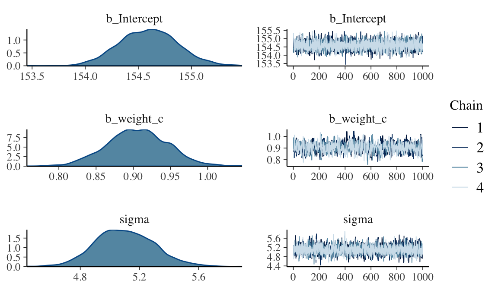
And again, our results don’t perfectly match those in the text because a) we’re simulating and b) we used fewer iterations than McElreath did. But the overall pattern remains.
6.5 Using information criteria
In contrast to model selection, “this section provides a brief example of model comparison and averaging” (p. 195, emphasis in the original).
6.5.1 Model comparison.
Load the milk data from earlier in the text.
library(rethinking)
data(milk)
d <-
milk %>%
drop_na(ends_with("_s"))
rm(milk)
d <-
d %>%
mutate(neocortex = neocortex.perc / 100)The dimensions of d are:
dim(d)## [1] 17 9Load brms.
detach(package:rethinking, unload = T)
library(brms)We’re ready to fit the competing kcal.per.g models. Note our use of update() in the last two models.
inits <- list(Intercept = mean(d$kcal.per.g),
sigma = sd(d$kcal.per.g))
inits_list <-list(inits, inits, inits, inits)
b6.11 <-
brm(data = d, family = gaussian,
kcal.per.g ~ 1,
prior = c(prior(uniform(-1000, 1000), class = Intercept),
prior(uniform(0, 100), class = sigma)),
iter = 2000, warmup = 1000, chains = 4, cores = 4,
inits = inits_list,
seed = 6)
inits <- list(Intercept = mean(d$kcal.per.g),
neocortex = 0,
sigma = sd(d$kcal.per.g))
inits_list <-list(inits, inits, inits, inits)
b6.12 <-
brm(data = d, family = gaussian,
kcal.per.g ~ 1 + neocortex,
prior = c(prior(uniform(-1000, 1000), class = Intercept),
prior(uniform(-1000, 1000), class = b),
prior(uniform(0, 100), class = sigma)),
iter = 2000, warmup = 1000, chains = 4, cores = 4,
inits = inits_list,
seed = 6)
inits <- list(Intercept = mean(d$kcal.per.g),
`log(mass)` = 0,
sigma = sd(d$kcal.per.g))
inits_list <-list(inits, inits, inits, inits)
b6.13 <-
update(b6.12,
newdata = d,
formula = kcal.per.g ~ 1 + log(mass),
inits = inits_list)
inits <- list(Intercept = mean(d$kcal.per.g),
neocortex = 0,
`log(mass)` = 0,
sigma = sd(d$kcal.per.g))
inits_list <-list(inits, inits, inits, inits)
b6.14 <-
update(b6.13,
newdata = d,
formula = kcal.per.g ~ 1 + neocortex + log(mass),
inits = inits_list)6.5.1.1 Comparing WAIC values.
In brms, you can get a model’s WAIC value with the waic() function.
waic(b6.14)##
## Computed from 4000 by 17 log-likelihood matrix
##
## Estimate SE
## elpd_waic 8.2 2.6
## p_waic 3.3 0.9
## waic -16.4 5.2## Warning: 2 (11.8%) p_waic estimates greater than 0.4. We recommend trying loo instead.Note the warning messages. Statisticians have made notable advances in Bayesian information criteria since McElreath published Statistical Rethinking. I won’t go into detail here, but the “We recommend trying loo instead” part of the message is designed to prompt us to use a different information criteria, the Pareto smoothed importance-sampling leave-one-out cross-validation (PSIS-LOO; aka, the LOO). In brms this is available with the loo() function, which you can learn more about in this vignette from the makers of the loo package. For now, back to the WAIC.
There are a few ways to approach information criteria within the brms framework. If all you want are the quick results for a model, just plug the name of your brm() fit object into the waic() function.
waic(b6.11)##
## Computed from 4000 by 17 log-likelihood matrix
##
## Estimate SE
## elpd_waic 4.4 1.9
## p_waic 1.3 0.3
## waic -8.9 3.8The WAIC and its standard error are on the bottom row. The \(p_\text{WAIC}\) and its SE are stacked atop that. And look there on the top row. Remember how we pointed out, above, that we get the WAIC by multiplying (lppd - pwaic) by -2? Well, if you just do the subtraction without multiplying the result by -2, you get the elpd_waic. File that away. It’ll become important in a bit.
Following the version 2.8.0 update, part of the suggested workflow for using information criteria with brms (i.e., execute ?loo.brmsfit) is to add the estimates to the brm() fit object itself. You do that with the add_criterion() function. Here’s how we’d do so with b6.11.
b6.11 <- add_criterion(b6.11, "waic")With that in place, here’s how you’d extract the WAIC information from the fit object.
b6.11$waic##
## Computed from 4000 by 17 log-likelihood matrix
##
## Estimate SE
## elpd_waic 4.4 1.9
## p_waic 1.3 0.3
## waic -8.9 3.8Why would I go through all that trouble?, you might ask. Well, two reasons. First, now your WAIC information is saved with all the rest of your fit output, which can be convenient. But second, it sets you up to use the loo_compare() function to compare models by their information criteria. To get a sense of that workflow, here we use add_criterion() for the next three models. Then we’ll use loo_compare().
# compute and save the WAIC information for the next three models
b6.12 <- add_criterion(b6.12, "waic")
b6.13 <- add_criterion(b6.13, "waic")
b6.14 <- add_criterion(b6.14, "waic")
# compare the WAIC estimates
w <- loo_compare(b6.11, b6.12, b6.13, b6.14,
criterion = "waic")
print(w)## elpd_diff se_diff
## b6.14 0.0 0.0
## b6.11 -3.8 2.5
## b6.13 -3.8 1.8
## b6.12 -4.7 2.5You don’t have to save those results as an object like we just did with w. But that’ll serve some pedagogical purposes in just a bit. So go with it. With respect to the output, notice the elpd_diff column and the adjacent se_diff column. Those are our WAIC differences. The models have been rank ordered from the lowest (i.e., b6.14) to the highest (i.e., b6.12). The scores listed are the differences of b6.14 minus the comparison model. Since b6.14 is the comparison model in the top row, the values are naturally 0 (i.e., \(x – x = 0\)). But now here’s another critical thing to understand: Since the brms version 2.8.0 update, WAIC and LOO differences are no longer reported in the \(-2 * x\) metric. Remember how we keep rehearsing that multiplying (lppd - pwaic) by -2 is a historic artifact associated with the frequentist chi-square test? We’ll, the makers of the loo package aren’t fans and they no longer support the conversion.
So here’s the deal. The substantive interpretations of the differences presented in an elpd_diff metric will be the same as if presented in a WAIC metric. But if we want to compare our elpd_diff results to those in the text, we will have to multiply them by -2. And also, if we want the associated standard error in the proper metric, we’ll need to multiply the se_diff column by 2. You wouldn’t multiply by -2 because that would return a negative standard error, which would be silly. Here’s a quick way to do so.
cbind(waic_diff = w[, 1] * -2,
se = w[, 2] * 2)## waic_diff se
## b6.14 0.000000 0.000000
## b6.11 7.528218 5.026986
## b6.13 7.617990 3.569936
## b6.12 9.339240 5.082137One more thing. On page 198, and on many other pages to follow in the text, McElreath used the rethinking::compare() function to return a rich table of information about the WAIC information for several models. If we’re tricky, we can do something similar with loo_compare. To learn how, let’s peer further into the structure of our w object.
str(w)## 'compare.loo' num [1:4, 1:8] 0 -3.76 -3.81 -4.67 0 ...
## - attr(*, "dimnames")=List of 2
## ..$ : chr [1:4] "b6.14" "b6.11" "b6.13" "b6.12"
## ..$ : chr [1:8] "elpd_diff" "se_diff" "elpd_waic" "se_elpd_waic" ...When we used print(w), a few code blocks earlier, it only returned two columns. It appears we actually have eight. We can see the full output with the simplify = F argument.
print(w, simplify = F)## elpd_diff se_diff elpd_waic se_elpd_waic p_waic se_p_waic waic se_waic
## b6.14 0.0 0.0 8.2 2.6 3.3 0.9 -16.4 5.2
## b6.11 -3.8 2.5 4.4 1.9 1.3 0.3 -8.9 3.8
## b6.13 -3.8 1.8 4.4 2.1 2.1 0.5 -8.8 4.2
## b6.12 -4.7 2.5 3.5 1.6 2.0 0.3 -7.1 3.2The results are quite analogous to those from rethinking::compare(). Again, the difference estimates are in the metric of the \(\text{elpd}\). But the interpretation is the same and we can convert them to the traditional information criteria metric with simple multiplication. As we’ll see later, this basic workflow applies to the LOO, too.
If you want to get those WAIC weights, you can use the brms::model_weights() function like so:
model_weights(b6.11, b6.12, b6.13, b6.14,
weights = "waic") %>%
round(digits = 2)## b6.11 b6.12 b6.13 b6.14
## 0.02 0.01 0.02 0.95That last round() line was just to limit the decimal-place precision. If you really wanted to go through the trouble, you could make yourself a little table like this:
model_weights(b6.11, b6.12, b6.13, b6.14,
weights = "waic") %>%
as_tibble() %>%
rename(weight = value) %>%
mutate(model = c("b6.11", "b6.12", "b6.13", "b6.14"),
weight = weight %>% round(digits = 2)) %>%
select(model, weight) %>%
arrange(desc(weight)) %>%
knitr::kable()| model | weight |
|---|---|
| b6.14 | 0.95 |
| b6.11 | 0.02 |
| b6.13 | 0.02 |
| b6.12 | 0.01 |
With a little [] subsetting and light wrangling, we can convert the contents of our w object to a format suitable for plotting the WAIC estimates.
w[, 7:8] %>%
data.frame() %>%
rownames_to_column(var = "model_name") %>%
ggplot(aes(x = model_name,
y = waic,
ymin = waic - se_waic,
ymax = waic + se_waic)) +
geom_pointrange(shape = 21, color = carto_pal(7, "BurgYl")[7], fill = carto_pal(7, "BurgYl")[5]) +
coord_flip() +
labs(x = NULL, y = NULL,
title = "My custom WAIC plot") +
theme_classic() +
theme(text = element_text(family = "Courier"),
axis.ticks.y = element_blank(),
panel.background = element_rect(fill = alpha(carto_pal(7, "BurgYl")[3], 1/4)))We briefly discussed the alternative information criteria, the LOO, above. Here’s how to use it in brms.
loo(b6.11)##
## Computed from 4000 by 17 log-likelihood matrix
##
## Estimate SE
## elpd_loo 4.4 1.9
## p_loo 1.3 0.3
## looic -8.8 3.8
## ------
## Monte Carlo SE of elpd_loo is 0.0.
##
## Pareto k diagnostic values:
## Count Pct. Min. n_eff
## (-Inf, 0.5] (good) 16 94.1% 3013
## (0.5, 0.7] (ok) 1 5.9% 2041
## (0.7, 1] (bad) 0 0.0% <NA>
## (1, Inf) (very bad) 0 0.0% <NA>
##
## All Pareto k estimates are ok (k < 0.7).
## See help('pareto-k-diagnostic') for details.The Pareto \(k\) values are a useful model fit diagnostic tool, which we’ll discuss later. But for now, realize that brms uses functions from the loo package to compute its WAIC and LOO values. In addition to the vignette, above, this vignette demonstrates the LOO with these very same examples from McElreath’s text. And if you’d like to dive a little deeper, check out Aki Vehtari’s GPSS2017 workshop or his talk from November 2018, Model assessment, selection and averaging.
Let’s get back on track with the text. To put all this model comparison in perspective,
in this analysis, the best model has more than 90% of the model weight. That’s pretty good. But with only 12 cases, the error on the WAIC estimate is substantial, and of course that uncertainty should propagate to the Akaike weights. So don’t get too excited. If we take the standard error of the difference from the [
loo_compare()] table literally, you can think of the difference as a Gaussian distribution centered (for the difference between models [b6.14andb6.11]) on [9.34] with a standard deviation of [5.08]. (p. 200)
Here are those two values in the \(\text{elpd}\) metric.
w[4, 1:2]## elpd_diff se_diff
## -4.669620 2.541069And here we convert them to the WAIC metric.
round(w[4, 1] * -2, 2)## [1] 9.34round(w[4, 2] * 2, 2)## [1] 5.08If it’s easier to see, here’s the same information in a tibble.
tibble(value = c("difference", "se"),
elpd = w[4, 1:2],
conversion_factor = c(-2, 2)) %>%
mutate(waic = elpd * conversion_factor)## # A tibble: 2 x 4
## value elpd conversion_factor waic
## <chr> <dbl> <dbl> <dbl>
## 1 difference -4.67 -2 9.34
## 2 se 2.54 2 5.08Before we forget, McElreath gave some perspective difference between the models with the highest and lowest WAIC values (p. 200).
But to the point, we can extract the two numerals and plug them into rnorm().
# how many draws would you like?
n <- 1e5
set.seed(6)
# simulate
diff <-
tibble(diff = rnorm(n,
mean = w[4, 1] * -2,
sd = w[4, 2] * 2))
diff %>%
summarise(the_probability_a_difference_is_negative = sum(diff < 0) / n)## # A tibble: 1 x 1
## the_probability_a_difference_is_negative
## <dbl>
## 1 0.0331In case you’re curious, this is a graphic version of what we just did.
tibble(diff = -20:30) %>%
ggplot(aes(x = diff, ymin = 0)) +
geom_ribbon(aes(ymax = dnorm(diff, w[4, 1] * -2, w[4, 2] * 2)),
fill = carto_pal(7, "BurgYl")[7]) +
geom_ribbon(data = tibble(diff = -20:0),
aes(ymax = dnorm(diff, w[4, 1] * -2, w[4, 2] * 2)),
fill = carto_pal(7, "BurgYl")[5]) +
geom_vline(xintercept = 0, linetype = 3,
color = carto_pal(7, "BurgYl")[3]) +
scale_y_continuous(NULL, breaks = NULL) +
theme_classic() +
theme(text = element_text(family = "Courier"),
panel.background = element_rect(fill = alpha(carto_pal(7, "BurgYl")[3], 1/4)))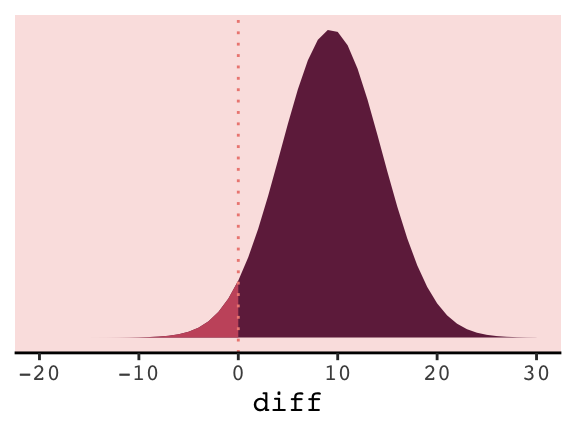
6.5.1.2 Comparing estimates.
The brms package doesn’t have anything like rethinking’s coeftab() function. However, one can get that information with a little ingenuity. Here we’ll employ the broom::tidy() function, which will save the summary statistics for our model parameters. For example, this is what it will produce for the full model, b6.14.
tidy(b6.14)## term estimate std.error lower upper
## 1 b_Intercept -1.10778838 0.59753389 -2.07797336 -0.11671016
## 2 b_neocortex 2.82815806 0.92990864 1.27706360 4.31866798
## 3 b_logmass -0.09724996 0.02888818 -0.14293482 -0.04860256
## 4 sigma 0.13995088 0.03072319 0.09899014 0.19629633
## 5 lp__ -19.26708438 1.64611968 -22.48058767 -17.30314877Note, tidy() also grabs the log posterior (i.e., lp__), which we’ll exclude for our purposes. With a little purrr::map() code, you can save the brm() fits and their tidy() summaries into a nested tibble, and then unnest() the tibble for coeftab()-like use.
my_coef_tab <-
tibble(model = c("b6.11", "b6.12", "b6.13", "b6.14")) %>%
mutate(fit = purrr::map(model, get)) %>%
mutate(tidy = purrr::map(fit, tidy)) %>%
unnest(tidy) %>%
filter(term != "lp__")
head(my_coef_tab)## # A tibble: 6 x 6
## model term estimate std.error lower upper
## <chr> <chr> <dbl> <dbl> <dbl> <dbl>
## 1 b6.11 b_Intercept 0.656 0.0449 0.582 0.731
## 2 b6.11 sigma 0.187 0.0369 0.138 0.254
## 3 b6.12 b_Intercept 0.348 0.567 -0.579 1.27
## 4 b6.12 b_neocortex 0.460 0.834 -0.883 1.82
## 5 b6.12 sigma 0.194 0.0403 0.142 0.268
## 6 b6.13 b_Intercept 0.705 0.0583 0.609 0.802Just a little more work and we’ll have a table analogous to the one McElreath produced with his coef_tab() function.
my_coef_tab %>%
# learn more about dplyr::complete() here: https://rdrr.io/cran/tidyr/man/expand.html
complete(term = distinct(., term), model) %>%
select(model, term, estimate) %>%
mutate(estimate = round(estimate, digits = 2)) %>%
spread(key = model, value = estimate)## # A tibble: 4 x 5
## term b6.11 b6.12 b6.13 b6.14
## <chr> <dbl> <dbl> <dbl> <dbl>
## 1 b_Intercept 0.66 0.35 0.7 -1.11
## 2 b_logmass NA NA -0.03 -0.1
## 3 b_neocortex NA 0.46 NA 2.83
## 4 sigma 0.19 0.19 0.18 0.14I’m also not aware of an efficient way in brms to reproduce Figure 6.12 for which McElreath nested his coeftab() argument in a plot() argument. However, one can build something similar by hand with a little data wrangling.
# data wrangling
wrangled_my_coef_tab <-
my_coef_tab %>%
complete(term = distinct(., term), model) %>%
rbind(
tibble(
model = NA,
term = c("b_logmass", "b_neocortex", "sigma", "b_Intercept"),
estimate = NA,
std.error = NA,
lower = NA,
upper = NA)) %>%
mutate(axis = ifelse(is.na(model), term, model),
model = factor(model, levels = c("b6.11", "b6.12", "b6.13", "b6.14")),
term = factor(term, levels = c("b_logmass", "b_neocortex", "sigma", "b_Intercept", NA))) %>%
arrange(term, model) %>%
mutate(axis_order = letters[1:20],
axis = ifelse(str_detect(axis, "b6."), str_c(" ", axis), axis))
# plot
ggplot(data = wrangled_my_coef_tab,
aes(x = axis_order,
y = estimate,
ymin = lower,
ymax = upper)) +
theme_classic() +
geom_hline(yintercept = 0, color = carto_pal(7, "BurgYl")[2]) +
geom_pointrange(shape = 21, color = carto_pal(7, "BurgYl")[7], fill = carto_pal(7, "BurgYl")[5]) +
scale_x_discrete(NULL, labels = wrangled_my_coef_tab$axis) +
ggtitle("My other coeftab() plot") +
coord_flip() +
theme(text = element_text(family = "Courier"),
panel.grid = element_blank(),
axis.ticks.y = element_blank(),
axis.text.y = element_text(hjust = 0),
panel.background = element_rect(fill = alpha(carto_pal(7, "BurgYl")[3], 1/4)))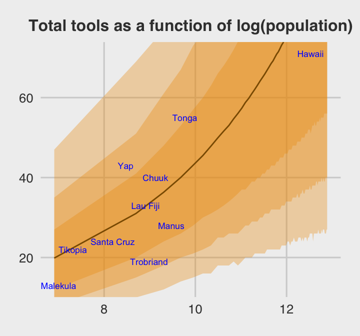
However, if you’re willing to deviate just a bit from the format of McElreath’s coeftab() plot, here’s a more elegant way to work with our my_coef_tab tibble.
my_coef_tab %>%
ggplot(aes(x = model, y = estimate, ymin = lower, ymax = upper)) +
geom_hline(yintercept = 0, color = carto_pal(7, "BurgYl")[2]) +
geom_pointrange(shape = 21, color = carto_pal(7, "BurgYl")[7], fill = carto_pal(7, "BurgYl")[5]) +
labs(x = NULL,
y = NULL) +
coord_flip() +
theme_classic() +
theme(text = element_text(family = "Courier"),
panel.grid = element_blank(),
axis.ticks.y = element_blank(),
axis.text.y = element_text(hjust = 0),
panel.background = element_rect(fill = alpha(carto_pal(7, "BurgYl")[3], 1/4)),
strip.background = element_rect(color = "transparent")) +
facet_wrap(~term, ncol = 1)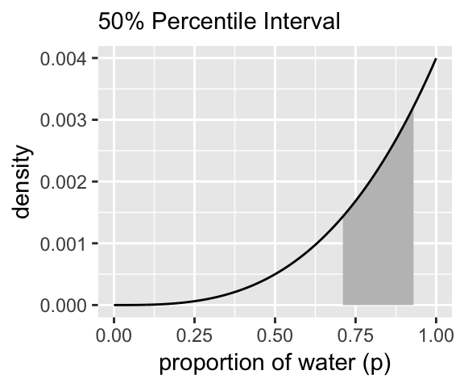
6.5.2 Model averaging.
Within the current brms framework, you can do model-averaged predictions with the pp_average() function. The default weighting scheme is with the LOO. Here we’ll use the weights = "waic" argument to match McElreath’s method in the text. Because pp_average() yields a matrix, we’ll want to convert it to a tibble before feeding it into ggplot2.
# we need new data for both the `fitted()` and `pp_average()` functions
nd <-
tibble(neocortex = seq(from = .5, to = .8, length.out = 30),
mass = 4.5)
# we'll get the `b6.14`-implied trajectory with `fitted()`
f <-
fitted(b6.14, newdata = nd) %>%
as_tibble() %>%
bind_cols(nd)
# the model-average trajectory comes from `pp_average()`
pp_average(b6.11, b6.12, b6.13, b6.14,
weights = "waic",
method = "fitted", # for new data predictions, use `method = "predict"`
newdata = nd) %>%
as_tibble() %>%
bind_cols(nd) %>%
# plot Figure 6.13
ggplot(aes(x = neocortex, y = Estimate)) +
geom_ribbon(aes(ymin = Q2.5, ymax = Q97.5),
fill = carto_pal(7, "BurgYl")[6], alpha = 1/4) +
geom_line(color = carto_pal(7, "BurgYl")[6]) +
geom_ribbon(data = f, aes(ymin = Q2.5, ymax = Q97.5),
color = carto_pal(7, "BurgYl")[5], fill = "transparent", linetype = 2) +
geom_line(data = f,
color = carto_pal(7, "BurgYl")[5], linetype = 2) +
geom_point(data = d, aes(y = kcal.per.g),
size = 2, color = carto_pal(7, "BurgYl")[7]) +
labs(y = "kcal.per.g") +
coord_cartesian(xlim = range(d$neocortex),
ylim = range(d$kcal.per.g)) +
theme_classic() +
theme(text = element_text(family = "Courier"),
panel.background = element_rect(fill = alpha(carto_pal(7, "BurgYl")[3], 1/4)))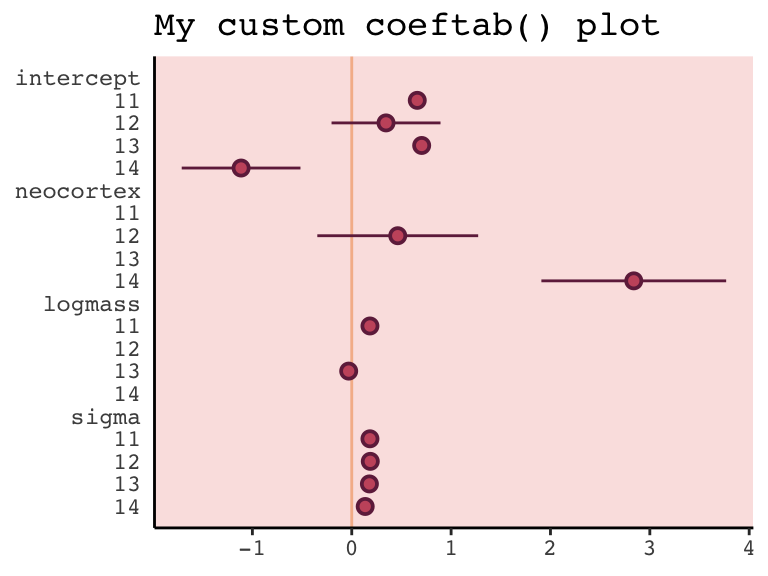
6.6 Summary Bonus: \(R^2\) talk
At the beginning of the chapter (pp. 167–168), McElreath briefly introduced \(R^2\) as a popular way to assess the variance explained in a model. He pooh-poohed it because of its tendency to overfit. It’s also limited in that it doesn’t generalize well outside of the single-level Gaussian framework. However, if you should find yourself in a situation where \(R^2\) suits your purposes, the brms bayes_R2() function might be of use. Simply feeding a model brm fit object into bayes_R2() will return the posterior mean, \(SD\), and 95% intervals. For example:
bayes_R2(b6.14) %>% round(digits = 3)## Estimate Est.Error Q2.5 Q97.5
## R2 0.502 0.133 0.163 0.669With just a little data processing, you can get a tibble table of each of models’ \(R^2\) ‘Estimate’.
rbind(bayes_R2(b6.11),
bayes_R2(b6.12),
bayes_R2(b6.13),
bayes_R2(b6.14)) %>%
as_tibble() %>%
mutate(model = c("b6.11", "b6.12", "b6.13", "b6.14"),
r_square_posterior_mean = round(Estimate, digits = 2)) %>%
select(model, r_square_posterior_mean)## # A tibble: 4 x 2
## model r_square_posterior_mean
## <chr> <dbl>
## 1 b6.11 0
## 2 b6.12 0.08
## 3 b6.13 0.15
## 4 b6.14 0.5If you want the full distribution of the \(R^2\), you’ll need to add a summary = F argument. Note how this returns a numeric vector.
r2_b6.13 <- bayes_R2(b6.13, summary = F)
r2_b6.13 %>%
glimpse()## num [1:4000, 1] 0.215 0.227 0.31 0.319 0.377 ...
## - attr(*, "dimnames")=List of 2
## ..$ : NULL
## ..$ : chr "R2"If you want to use these in ggplot2, you’ll need to put them in tibbles or data frames. Here we do so for two of our model fits.
# model b6.13
r2_b6.13 <-
bayes_R2(b6.13, summary = F) %>%
as_tibble() %>%
rename(r2_13 = R2)
# model b6.14
r2_b6.14 <-
bayes_R2(b6.14, summary = F) %>%
as_tibble() %>%
rename(r2_14 = R2)
# Let's put them in the same data object
r2_combined <-
bind_cols(r2_b6.13, r2_b6.14) %>%
mutate(dif = r2_14 - r2_13)
# Plot their densities
r2_combined %>%
ggplot() +
geom_density(aes(x = r2_13),
fill = carto_pal(7, "BurgYl")[4], alpha = 3/4, size = 0, ) +
geom_density(aes(x = r2_14),
fill = carto_pal(7, "BurgYl")[6], alpha = 3/4, size = 0, ) +
scale_y_continuous(NULL, breaks = NULL) +
coord_cartesian(xlim = 0:1) +
labs(x = NULL,
title = expression(paste(italic("R")^{2}, " distributions")),
subtitle = "Going from left to right, these are\nfor models b6.13 and b6.14.") +
theme_classic() +
theme(text = element_text(family = "Courier"),
panel.background = element_rect(fill = alpha(carto_pal(7, "BurgYl")[3], 1/4)))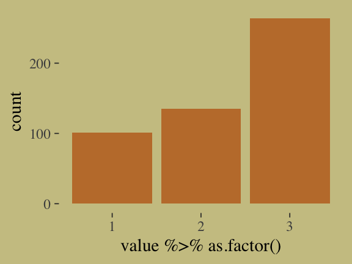
If you do your work in a field where folks use \(R^2\) change, you might do that with a simple difference score, which we computed above with mutate(dif = R2.14 - R2.13). Here’s the \(\Delta R^2\) (i.e., dif) plot:
r2_combined %>%
ggplot(aes(x = dif, y = 0)) +
geom_halfeyeh(fill = carto_pal(7, "BurgYl")[5],
color = carto_pal(7, "BurgYl")[7],
point_interval = median_qi, .width = .95) +
scale_y_continuous(NULL, breaks = NULL) +
labs(x = expression(paste(Delta, italic("R")^{2})),
subtitle = "This is how much more variance, in\nterms of %, model b6.14 explained\ncompared to model b6.13.") +
theme_classic() +
theme(text = element_text(family = "Courier"),
panel.background = element_rect(fill = alpha(carto_pal(7, "BurgYl")[3], 1/4)))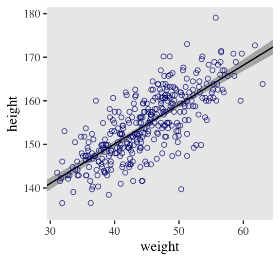
The brms package did not get these \(R^2\) values by traditional method used in, say, ordinary least squares estimation. To learn more about how the Bayesian \(R^2\) sausage is made, check out the paper by Gelman, Goodrich, Gabry, and Ali.
Session info
sessionInfo()## R version 3.5.1 (2018-07-02)
## Platform: x86_64-apple-darwin15.6.0 (64-bit)
## Running under: macOS High Sierra 10.13.6
##
## Matrix products: default
## BLAS: /System/Library/Frameworks/Accelerate.framework/Versions/A/Frameworks/vecLib.framework/Versions/A/libBLAS.dylib
## LAPACK: /Library/Frameworks/R.framework/Versions/3.5/Resources/lib/libRlapack.dylib
##
## locale:
## [1] en_US.UTF-8/en_US.UTF-8/en_US.UTF-8/C/en_US.UTF-8/en_US.UTF-8
##
## attached base packages:
## [1] parallel stats graphics grDevices utils datasets methods base
##
## other attached packages:
## [1] rethinking_1.80 viridis_0.5.1 viridisLite_0.3.0 ggbeeswarm_0.6.0
## [5] dutchmasters_0.1.0 ghibli_0.2.0 hrbrthemes_0.6.0 loo_2.1.0
## [9] ggthemes_4.0.1 wesanderson_0.3.6.9000 GGally_1.4.0 tidybayes_1.0.4
## [13] bayesplot_1.6.0 fiftystater_1.0.1 bindrcpp_0.2.2 rstan_2.18.2
## [17] StanHeaders_2.18.0-1 brms_2.8.0 Rcpp_1.0.0 gridExtra_2.3
## [21] broom_0.5.1 ggrepel_0.8.0 rcartocolor_1.0.0 forcats_0.3.0
## [25] stringr_1.3.1 dplyr_0.8.0.1 purrr_0.2.5 readr_1.1.1
## [29] tidyr_0.8.1 tibble_2.1.1 ggplot2_3.1.0 tidyverse_1.2.1
##
## loaded via a namespace (and not attached):
## [1] colorspace_1.3-2 ggridges_0.5.0 rsconnect_0.8.8
## [4] rprojroot_1.3-2 ggstance_0.3 markdown_0.8
## [7] base64enc_0.1-3 rstudioapi_0.7 svUnit_0.7-12
## [10] DT_0.4 fansi_0.4.0 mvtnorm_1.0-8
## [13] lubridate_1.7.4 xml2_1.2.0 codetools_0.2-15
## [16] bridgesampling_0.4-0 extrafont_0.17 knitr_1.20
## [19] shinythemes_1.1.1 jsonlite_1.5 Rttf2pt1_1.3.7
## [22] shiny_1.1.0 compiler_3.5.1 httr_1.3.1
## [25] backports_1.1.2 assertthat_0.2.0 Matrix_1.2-14
## [28] lazyeval_0.2.1 cli_1.0.1 later_0.7.3
## [31] htmltools_0.3.6 prettyunits_1.0.2 tools_3.5.1
## [34] igraph_1.2.1 coda_0.19-2 gtable_0.2.0
## [37] glue_1.3.0 reshape2_1.4.3 cellranger_1.1.0
## [40] nlme_3.1-137 extrafontdb_1.0 crosstalk_1.0.0
## [43] xfun_0.3 ps_1.2.1 rvest_0.3.2
## [46] mime_0.5 miniUI_0.1.1.1 gtools_3.8.1
## [49] MASS_7.3-50 zoo_1.8-2 scales_1.0.0
## [52] colourpicker_1.0 hms_0.4.2 promises_1.0.1
## [55] Brobdingnag_1.2-5 inline_0.3.15 RColorBrewer_1.1-2
## [58] shinystan_2.5.0 yaml_2.1.19 gdtools_0.1.7
## [61] reshape_0.8.7 stringi_1.2.3 highr_0.7
## [64] dygraphs_1.1.1.5 pkgbuild_1.0.2 rlang_0.3.1
## [67] pkgconfig_2.0.2 matrixStats_0.54.0 evaluate_0.10.1
## [70] lattice_0.20-35 bindr_0.1.1 rstantools_1.5.0
## [73] htmlwidgets_1.2 labeling_0.3 tidyselect_0.2.5
## [76] processx_3.2.1 plyr_1.8.4 magrittr_1.5
## [79] bookdown_0.9 R6_2.3.0 generics_0.0.2
## [82] pillar_1.3.1 haven_1.1.2 withr_2.1.2
## [85] xts_0.10-2 abind_1.4-5 modelr_0.1.2
## [88] crayon_1.3.4 arrayhelpers_1.0-20160527 utf8_1.1.4
## [91] rmarkdown_1.10 grid_3.5.1 readxl_1.1.0
## [94] callr_3.1.0 threejs_0.3.1 digest_0.6.18
## [97] xtable_1.8-2 httpuv_1.4.4.2 stats4_3.5.1
## [100] munsell_0.5.0 beeswarm_0.2.3 vipor_0.4.5
## [103] shinyjs_1.0